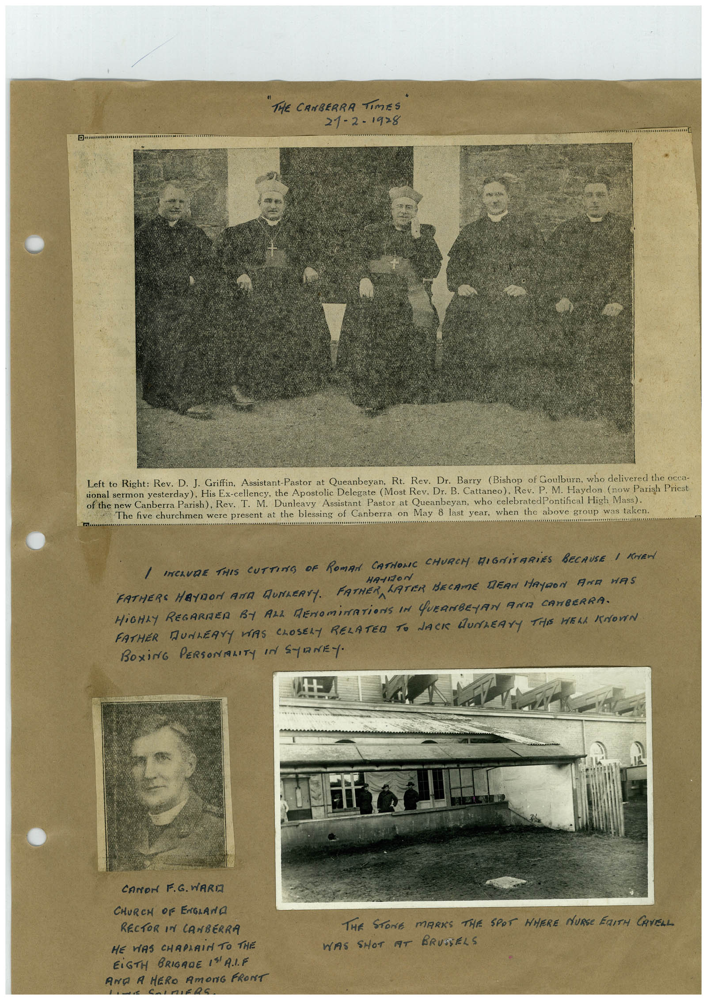

Book 1 · scan 010


Description
A newspaper group portrait, a handwritten recollection of Canberra clergy, a portrait captioned Canon F. G. Ward, and a photograph associated with Edith Cavell in Brussels.
Transcription
Context
This page connects the compiler’s memories of local clergy with a wartime memorial scene. Names and relationships here are attributed to the printed and handwritten captions. Artifact descriptions are an initial visual reading, and the full page transcription remains a machine draft.
Review notes
Compare the machine draft with the scan. Handwriting and names need human review.
Artifacts
Edit the artifacts field in this note’s frontmatter to change these records. This summary is generated.
B01-S010-A01 — Canberra clergy — newspaper cutting
Types: Newspaper clipping
Scope: Individual item or region.
Caption: Not mapped yet.
Caption source: Not recorded yet.
Caption status: unmapped
Transcription: The printed caption names Rev. D. J. Griffin, Rt. Rev. Dr. Barry, Most Rev. Dr. B. Cattaneo, Rev. P. M. Haydon and Rev. T. M. Dunleavy, from left to right.
Context: The handwritten heading attributes the cutting to The Canberra Times, 21 February 1928. The printed caption says the group was photographed at the blessing of Canberra on May 8 the previous year. These details are read from the page and await independent source checking.
People: p-m-haydon · t-m-dunleavy
B01-S010-A02 — Canon F. G. Ward
Types: Portrait photo
Scope: Individual item or region.
Caption: Not mapped yet.
Caption source: Not recorded yet.
Caption status: unmapped
Transcription: Canon F. G. Ward / Church of England / Rector in Canberra
Context: Identification comes from the handwritten caption, not facial recognition. The face detector’s possible-person region remains for human verification.
People: f-g-ward
B01-S010-A03 — A memorial site in Brussels
Types: Photo
Scope: Individual item or region.
Caption: Not mapped yet.
Caption source: Not recorded yet.
Caption status: unmapped
Transcription: The stone marks the spot where Nurse Edith Cavell was shot at Brussels.
Context: The compiler associates this scene with Edith Cavell. The people visible in the photograph are unidentified. Cavell is mentioned by the caption; she is not asserted to be pictured.
People: edith-cavell
Machine transcription
THE CANBERRA Times 21-2-19>8 Drumm Left to Right: Rev. D. J. Griffin, Assistant-Pastor at Queanbeyan, Rt. Rev. Dr. Barry (Bishop of Goulburn, who delivered the occa- sional sermon yesterday). His Ex-cellency, the Apostolic Delegate (Most Rev. Dr. B. Cattaneo), Rev. P.M. Haydon (now Parish Priest of the new Canberra Parish), Rev. T. M. Dunleavy Assistant Pastor at Queanbeyan, who celebratedPontifical High Mass). The five churchmen were present at the blessing of Canberra on May 8 last year, when the above group was taken. / INCLUDE THIS CUTTING OF ROMAN CATHONE CHURCH DIGNiTARiES BECAUSE I KEN FATHERS MAYDON AND MUNLERTY. FATHERA HA-1120 n LATER BECAME DEAN HAYDON ANA HAS HiGHLY REGARDER BY ALL DENOMINATiONS IN QUEANBEJAN ANIZ CANBERRA. FATHER DUNLEAYY WAS CLOSELY RELATED TO JACK DUNLEAYY THE HELL KNOWN BOXiNG PERSONALITY IN SYRNEY. CANON F.G. VARIA CHURCH OF ENGLANA RECTOR IN CANBERRA HE WAS CHAPLAIN TO THE EiGTH BRIGADE I"A.IF ANA A HERO AmOnG FRONT THE STONE MARKS THE SPOT WHERE NURSE FaITH CAVELL WAS SHOT AT BRUSSELS